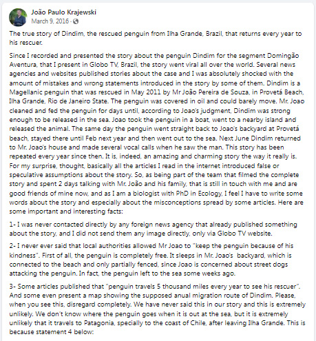

事實查核 | 老人救下一隻小企鵝，不料它竟懂得感恩！每年都遊5千公里回來看望老爺爺
聲明的日期(Claim date):西元2024年2月28日(February 28, 2024) | Updated: April 5, 2024Fact-check by ANDRE M. CHANG
評估的聲明(Claim reviewed): "老人救下一隻小企鵝，不料它竟懂得感恩！每年都遊5千公里回來看望老爺爺"
Claim date: April 2, 2024
Rating: 2
大多是假的(Mostly false)1="False", 2="Mostly false", 3="Half true", 4="Mostly true", 5="True"
Fact:
截圖於2024年4月5日，來自 João Paulo Krajewski 的 Facebook 帳戶。
João Paulo Krajewski，為巴西 Globo 電視台記錄(丁丁)企鵝故事的生物學家於2016年3月9日發表了一份聲明:
João Paulo Krajewski，為巴西 Globo 電視台記錄(丁丁)企鵝故事的生物學家於2016年3月9日發表了一份聲明:
"3- 有一些文章發布了'為見救命恩人, 企鵝每年游5千英里'。 拜託，當你看到這一點，完全無視。我們在故事中從來沒有說過這個, 且極不可能"。
References:
• "臉書" www.facebook.com, www.facebook.com/joaopaulo.krajewski/posts/1008600529225514. 取日2024年4月5日。
• "巴西 Globo 電視台" "Domingão Do Faustão | 'Domingão Aventura' Mostra Amizade de Pinguim Com Morador de Ilha | Globoplay." Globoplay.globo.com, globoplay.globo.com/v/4864050/. 取日2024年4月5日。
• "臉書" www.facebook.com, www.facebook.com/joaopaulo.krajewski/posts/1008600529225514. 取日2024年4月5日。
• "巴西 Globo 電視台" "Domingão Do Faustão | 'Domingão Aventura' Mostra Amizade de Pinguim Com Morador de Ilha | Globoplay." Globoplay.globo.com, globoplay.globo.com/v/4864050/. 取日2024年4月5日。